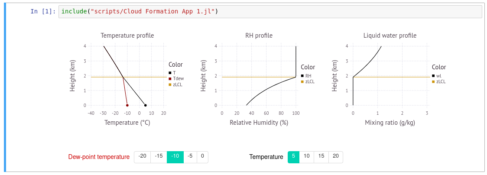

Install the latest release of julia from https://julialang.org/downloads/.
Once installed start the julia REPL (Read-Eval-Print-Loop)
_
_ _ _(_)_ | Documentation: https://docs.julialang.org
(_) | (_) (_) |
_ _ _| |_ __ _ | Type "?" for help, "]?" for Pkg help.
| | | | | | |/ _` | |
| | |_| | | | (_| | | Version 1.3.0 (2019-11-26)
_/ |\__'_|_|_|\__'_| | Official https://julialang.org/ release
|__/ |
julia>At the prompt type
julia> ]to start the package manager. Then, add the following julia packages:
pkg> add CSV Colors Compose Conda Contour DataFrames DifferentialEquations Distributions Documenter Gadfly IJulia Interact Interpolations LsqFit NumericIO ParameterizedFunctions Pkg PyCall Roots SpecialFunctions WebIONext, install the Jupyter notebook server
julia> using IJulia
julia> notebook()Next, exit the notbook and exit out of the julia REPL session. Restart the REPL. and install the WebIO Jupyter extension:
julia> using WebIO
julia> WebIO.install_jupyter_nbextension()Finally, download the ZIP'ed notebooks from GitHub: Atmospheric-Physics-Notebooks

Extract the ZIP file to location of your choice (e.g. Documents). Next restart julia and perform the following additional installations. This step only needs to be performed once.
julia> cd("Path/To/Atmospheric-Physics-Notebooks")
julia> ]
pkg> dev deps/AtmosphericThermodynamics/
pkg> dev deps/DifferentialMobilityAnalyzers/
pkg> add Calculus LambertW LinearAlgebra Random SpecialFunctions StatsBaseFinally, start the notebook server:
julia> using IJulia
julia> notebook()Navigate to the extracted folder and open any of the notebooks, i.e. files with with the .ipynb extension.

Start the notebook Module 1 - Aerosol Dynamics.ipynb and "Run All Below". Make sure to wait until the kernel is initialized.

During the first execution of the notebook julia compiles some code. Time of first execution is ~2-5 min. Once a cell has been processed a number appears in parenthesis, e.g. In[1]

The notebook is now ready. You can interact with the graphs using the widgets provided with each element. It is not necessary to execute the cells again.
Note that the widget state can become corrupted during execution. It is good policy to run "Restart Kernel & Clear All Output", followed by saving the notebook.